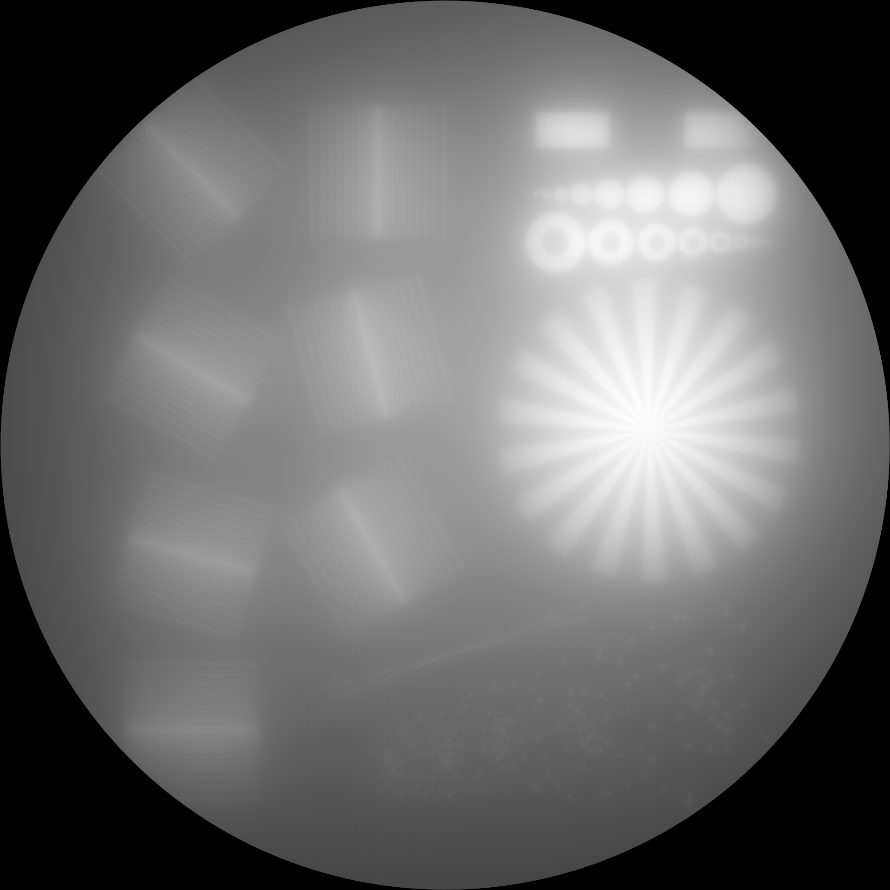
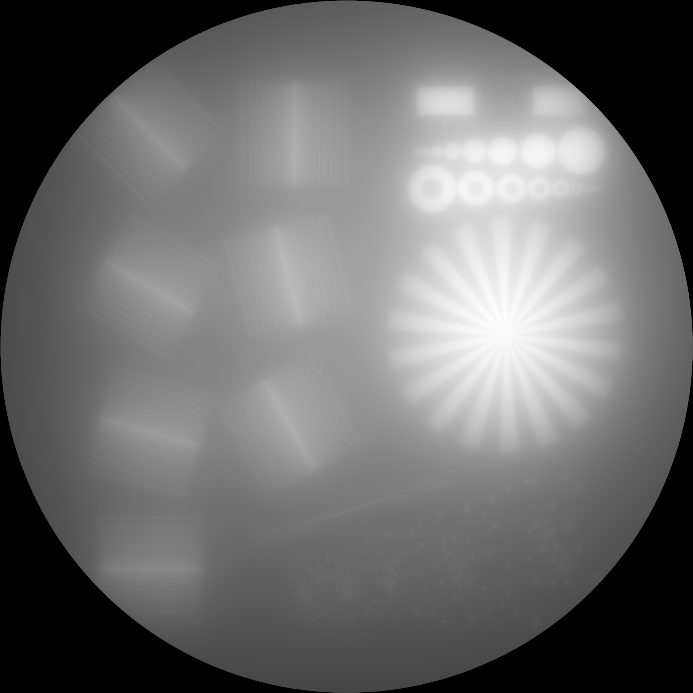

RadonKA.jl
A simple yet sufficiently fast Radon and inverse Radon (iradon) transform implementation using KernelAbstractions.jl.


Quick Overview
- [x] For 2D and 3D arrays
- [x] parallel
radonandiradon(?RadonParallelCircle) - [x] attenuated
radonandiradon(see the parameterμ) - [x] arbitrary 2D geometries where starting and endpoint of each ray can be specified (fan beam could be a special case if this) (
?RadonFlexibleCircle) - [x] It is restricted to the incircle of radius
N ÷ 2 - 1if the array has size(N, N, N_z) - [x] based on KernelAbstractions.jl
- [x] tested on
CPU()andCUDABackend - [x] registered adjoint rules for both
radonandiradon - [x] high performance however not ultra high performance
- [x] simple API
Installation
Requires Julia 1.9
julia> ]add RadonKASimple use
using RadonKA, ImageShow, ImageIO, TestImages
img = Float32.(testimage("resolution_test_512"))
angles = range(0f0, 2f0π, 500)[begin:end-1]
# 0.196049 seconds (145 allocations: 1009.938 KiB)
@time sinogram = radon(img, angles);
# 0.268649 seconds (147 allocations: 1.015 MiB)
@time backproject = RadonKA.iradon(sinogram, angles);
simshow(sinogram)
simshow(backproject) 
{kind=link}
Examples
See either the documentation. Otherwise, this example shows the main features, including CUDA support. There is one tutorial about Gradient Descent optimization. Another one covers how the Radon transform is used in Volumetric Additive Manufacturing.